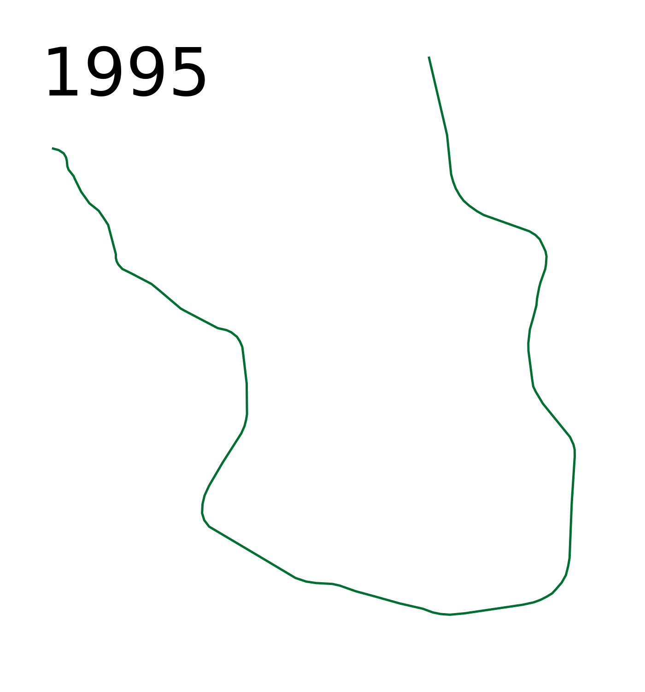
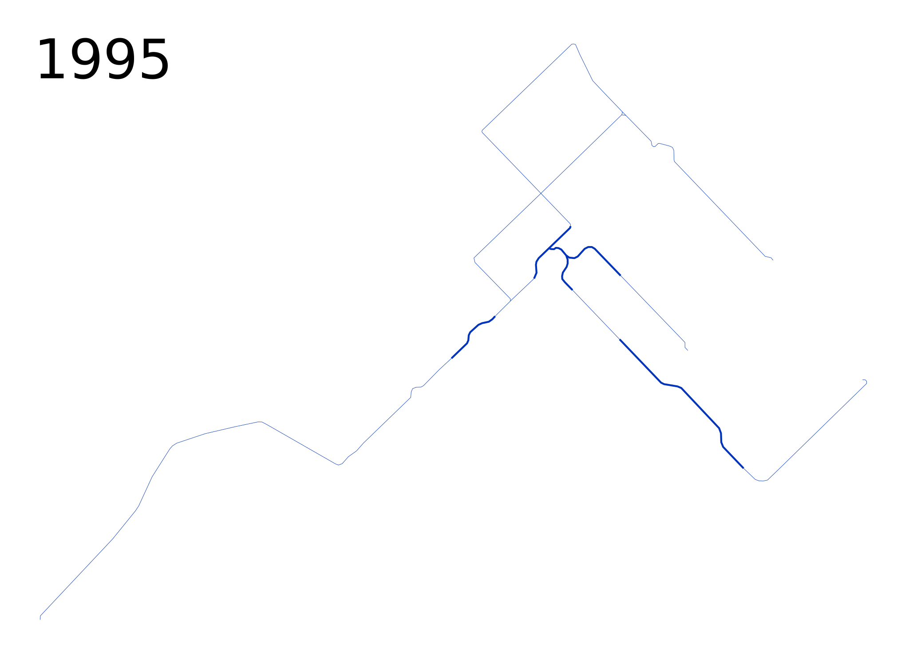
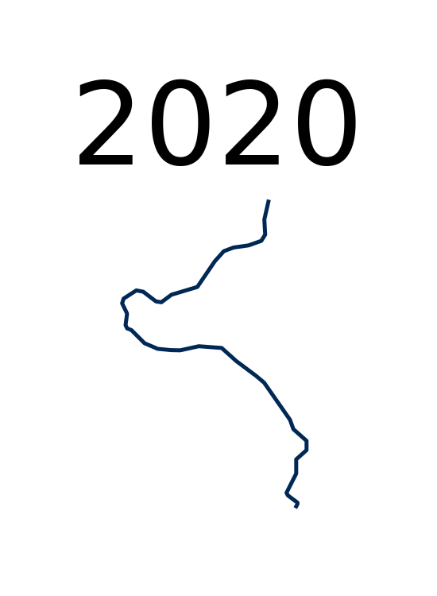

One-off Rapid Transit Maps for Scale Comparison with Timelines
smaller versions --- larger versions
Past:
Kansas City
Louisville
Sioux City
Rochester
Chiatura
(ignoring midday breaks)
Halle

Naberezhnye Chelny

Indianapolis
Special-Purpose:
Disneyworld
Makkah
(7 days/year)
Morgantown
(~195 days/year)

Based on frequent midday service at the end of the year in question (notes).
Scale: = 10 km (30 CSS pixels per km)
Please send any corrections or questions to threestationsquare at gmail dot com.
See also: rapid transit timelines - miscellaneous timelines and maps